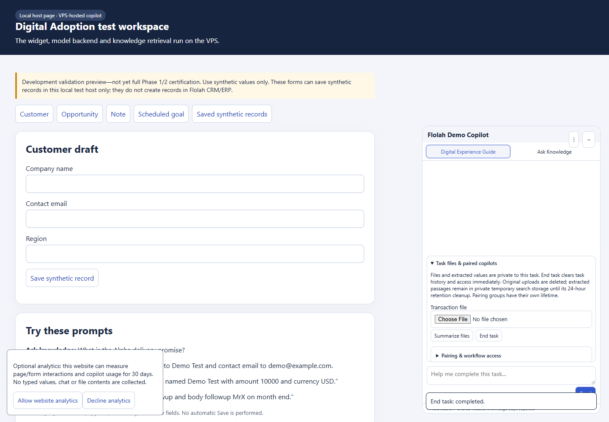
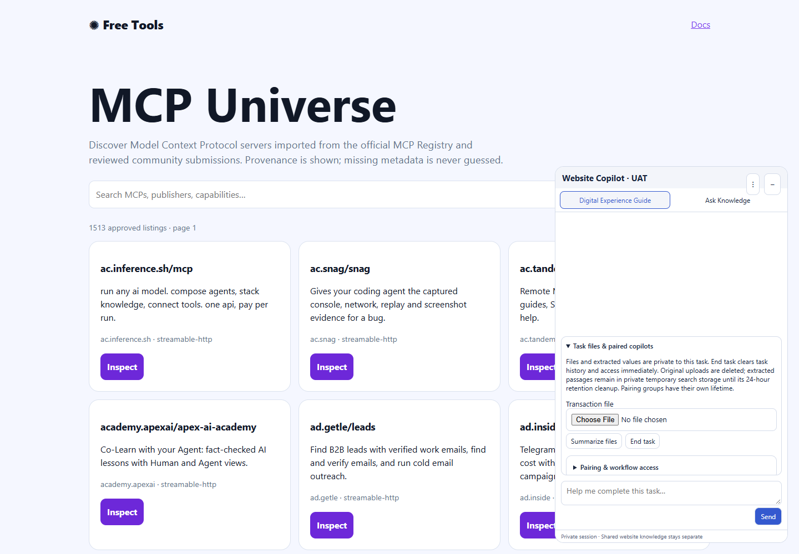

Runtime 20261019-private-retention-d. {'passed': 13, 'partial': 1, 'failed': 1}. 273 service tests passed. This incremental acceptance does not certify the full product.
End task clears browser context and server authorization immediately. Extracted passages remain in separate hourly private OpenSearch indexes for the 24-hour ISM policy. Raw uploads retain encrypted-file cleanup. The policy uses index age and periodic execution; exact 24-hour erasure is not claimed. No website form was filled or submitted in this acceptance.
Structured report · Real OpenSearch evidence · Browser evidence · Historical summary timeout
| Case | Status | Evidence | Recommendation |
|---|---|---|---|
| SERVICE_REGRESSIONS | passed | 273 service tests passed in the merged VPS candidate, including 13 private-search retention/isolation cases. | Retain these regressions; this is not full Phase 1/2 certification. |
| RETENTION_POLICY | passed | Hourly private index uses the 24-hour ISM policy. | Preserve task authorization checks and retention isolation. |
| REAL_PARSE_AND_SEARCH | passed | Real text extraction indexed and retrieved with source locators. | Preserve task authorization checks and retention isolation. |
| NO_RETAINED_EXTRACTION_RAM | passed | Full extracted documents are not retained in coordinator task state. | Preserve task authorization checks and retention isolation. |
| UNRELATED_VISITOR_DENIED | passed | Another visitor cannot read the task. | Preserve task authorization checks and retention isolation. |
| END_TASK_ACCESS_REVOKED | passed | Ended task cannot search or restore its context. | Preserve task authorization checks and retention isolation. |
| RETENTION_OWNS_PHYSICAL_CLEANUP | passed | Synthetic passages remain indexed after End task for ISM cleanup. | Preserve task authorization checks and retention isolation. |
| NEW_TASK_CANNOT_REVIVE_CONTENT | passed | New task has no access to ended-task passages. | Preserve task authorization checks and retention isolation. |
| LOCAL_RETENTION_NOTICE | passed | Local retention notice Screenshot | Preserve task authorization checks and retention isolation. |
| VISITOR_UPLOAD_READY | passed | Visitor upload ready Screenshot | Preserve task authorization checks and retention isolation. |
| SUMMARY_REQUEST_STARTED_FOR_CANCELLATION | passed | Summary request started for cancellation Screenshot | Preserve task authorization checks and retention isolation. |
| END_TASK_BROWSER_CONTEXT_CLEARED | passed | End task browser context cleared Screenshot | Preserve task authorization checks and retention isolation. |
| PUBLIC_RETENTION_NOTICE | passed | Public retention notice Screenshot | Preserve task authorization checks and retention isolation. |
| OLLAMA_CHECKED_VISITOR_SUMMARY | failed | First browser attempt did not display the synthetic summary within 90 seconds while the live Admin setting selected the Ollama reasoning checker. Upload and real search extraction passed independently. | Re-run after checker latency/capacity is resolved; do not count the cancellation test as summary acceptance. |
| PHYSICAL_24H_DELETION | partial | Actual ISM policy attachment and retained passages verified. The 24-hour elapsed deletion cycle has not yet occurred. | Verify managed-index deletion after its retention cycle; allow for periodic scheduling and failures. |

